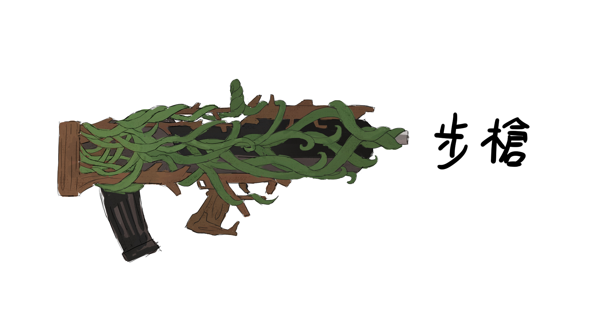
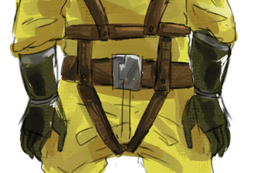
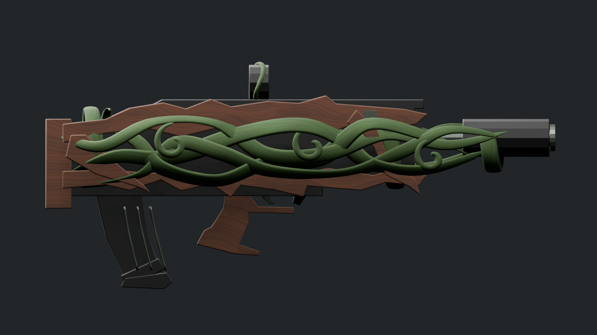
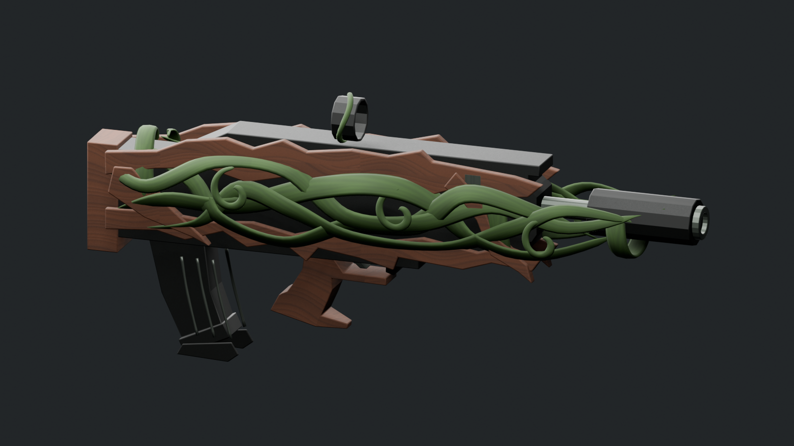
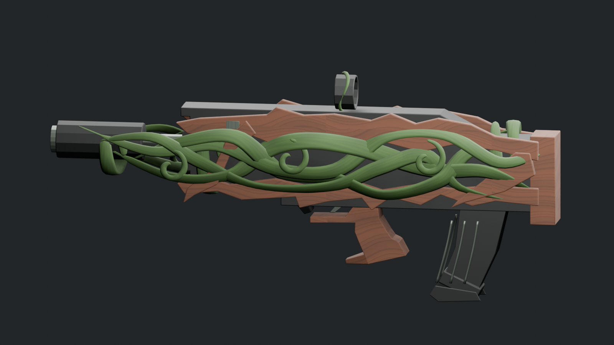
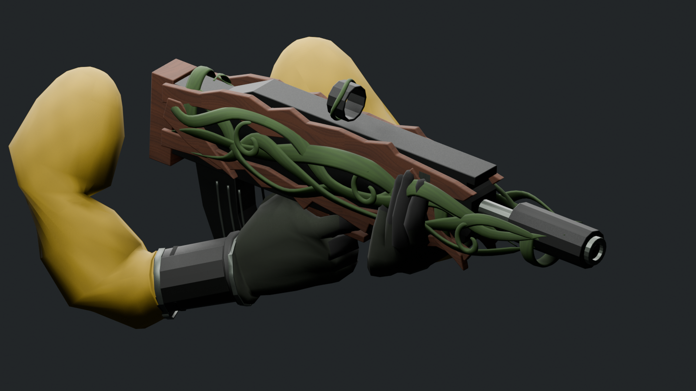
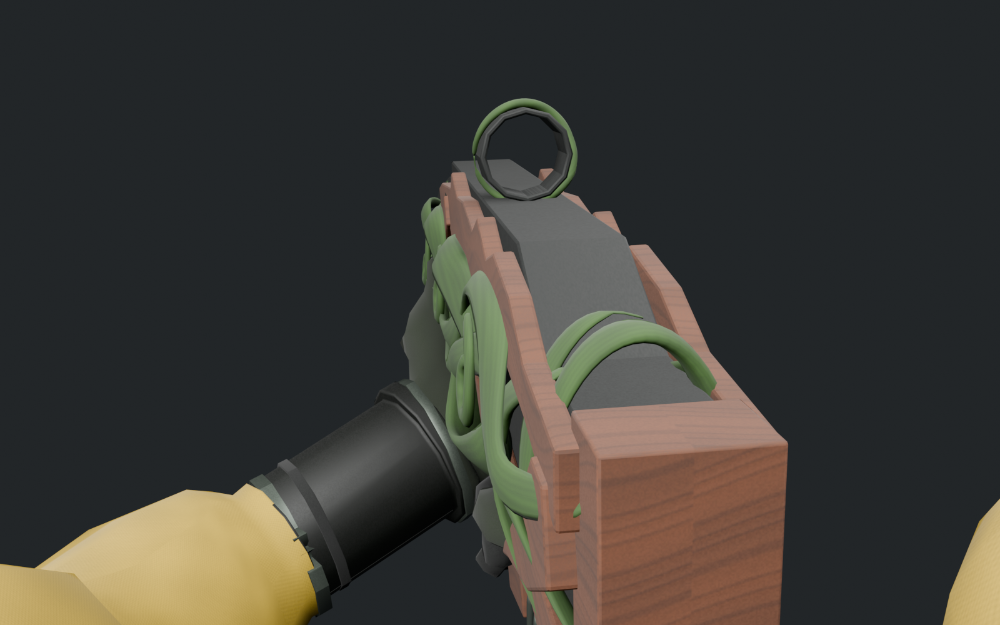

PURGERS / ART REVIEW / 2026.09.25
藤蔓步槍與第一人稱手臂
初版 01 · 以原 FBX 比例與動畫為基礎，加入木質外殼、立體藤蔓、黃色袖子、深色護腕與手套。以下全部模型預覽均由實際 Blender 網格渲染。
 武器與雙手 · 材質及立體輪廓
武器與雙手 · 材質及立體輪廓
審閱草稿：程序生成貼圖尚待美術精修。Unity 材質、正式相機視角與全部動畫姿勢的穿模驗收尚未完成。
設計參考

使用者提供的武器設計
使用者提供的服裝與手部設計武器外形

側面：沿用原灰盒比例，藤蔓與木片為新增幾何

斜角與厚度
補齊的另一側設計手部與視線

原動畫中的持槍姿勢
Blender 第一人稱審閱鏡頭；不是 Unity 正式 FOV換彈動作
播放原 Reload.001 動作 · 24 fps · 六段原動作均包含於交付檔
資料檢查
63原有骨骼
6來源動作
35,528三角形
10,395逐幀骨骼位置比對
FBX 已重新匯入 Blender 檢查，骨骼名稱、父子關係與動作幀範圍一致；骨骼位置最大誤差小於 0.001 mm。這項檢查不代表 Unity 執行或穿模驗收已完成。美術草稿尚待效能整理。